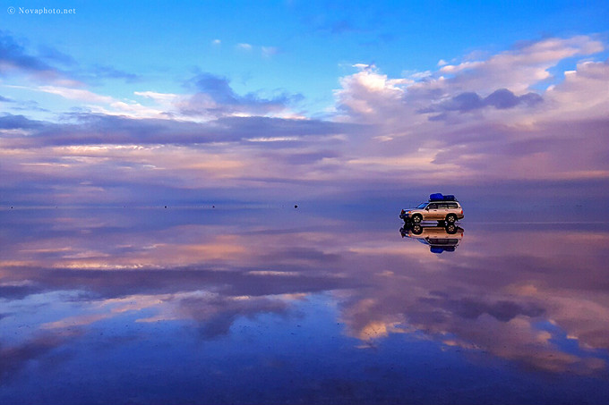
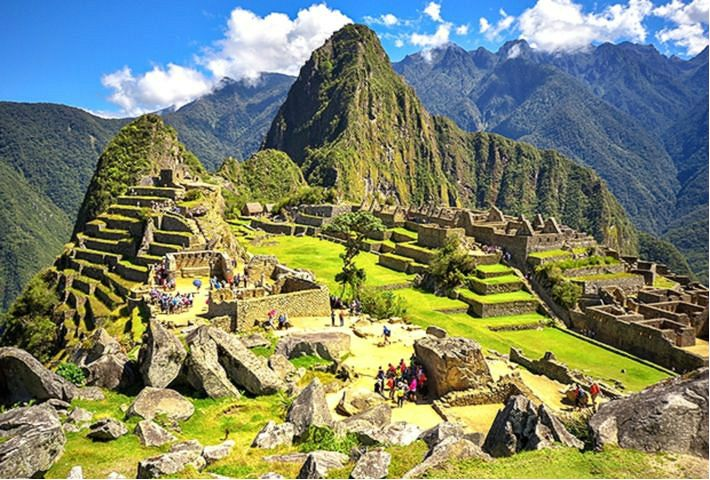
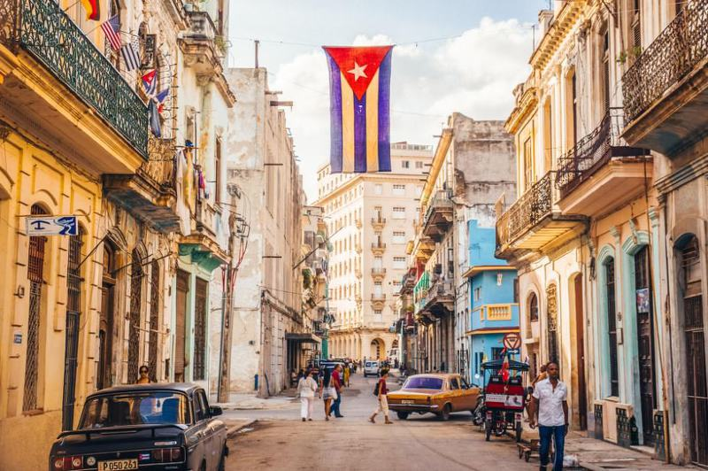

| 장소 | 특징 | 사진 |
| 볼리비아 : 우유니사막 | 볼리비아에 있는 건조 호수로, 그 넓이가 10,582[1] km²에
이른다. 이 사막은 3,650m 높이의 안데스 영봉과 가까운 볼리비아 남서부 포토시 주와 오루로 주에 자리잡고 있다. |  |
| 페루 : 마추픽추 | 마추 픽추(스페인어: machu picchu, 문화어: 마츄 삐끄츄)는
페루에 있는 잉카 문명의 고대 요새 도시이다. |  |
| 쿠바 : 하바나 | 아바나(스페인어: La Habana 라 아바나[*]) 또는 하바나(영어: Havana)는 쿠바의 수도이다. 공식 이름은 산 크리스토발 데 라 아바나(San Cristóbal de La Habana)이다. 인구는 210만명이다. |  |